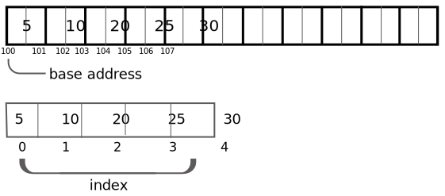

Representation of 1-D array in memory
Formula ↓
Q- Given base address of A[1300, ... ,1900] is 1020, size of single element is 2 find address of
A[1700].
BA = 1020
w = 2
i = 1700
lb = 1300
formula ↓
address of A[i] = BA + [(i - lb) w]
address of A[1700] = 1020 + [(1700 - 1300) * 2]
= 1820
Q- An array Arr[20][15] is stored in the memory along the column with each element occupying 8 bytes
of memory. Find out the Base address and address of the element Arr[2][3], if the element
Arr[10][25] is stored at the address 1000.
Ans:
Although element Arr[10][25] doesn't exists but still using its address we can find base address of the main array (Arr[20][15]).
Finding B.A. using element Arr[10][25]
We know array is stored along the column
Address of Arr[10][25] = 1000
1000 = B.A. + [(j - lc)m + (i - lr)]w
[m and n will always be of main array (Arr[20][15])]
[here i = 10 and j = 25] [lc - lower column bound = 0 if not given and lr - lower row bound = 0 if not given]
1000 = B.A. + [(25 - 0)10 + (10 - 0)]8
1000 = B.A. + (500 + 10)8
1000 = B.A. + (510 * 8)
1000 = B.A. + 4080
B.A. = -4080 + 1000
B.A. = -3080
Now we will find the address of Arr[2][3]
now i = 2 and j = 3
Address of Arr[2][3] = B.A. + [(j - lc)m + (i - lr)]w
Address of Arr[2][3] = -3080 + [(3 - 0)20 + (2 - 0)]8
Address of Arr[2][3] = -3080 + (60 + 2)8
Address of Arr[2][3] = -3080 + (62)8
Address of Arr[2][3] = -3080 + 496
Address of Arr[2][3] = -2584 (answer)
#include <stdio.h>
void printArr(int[], int);
void insertion(int[], int *, int, int);
int main()
{
int arr[100] = {0}, size, value, pos;
printf("Enter the size of the array : ");
scanf("%d", &size);
printf("Enter the value you want to insert : ");
scanf("%d", &value);
printf("Enter the position : ");
scanf("%d", &pos);
printf("Array before insertion : ");
printArr(arr, size);
// insertion function
insertion(arr, &size, pos, value);
printf("\nArray after insertion : ");
printArr(arr, size);
return 0;
}
void printArr(int x[], int size)
{
for (int i = 0; i < size; i++)
{
printf("%d\t", x[i]);
}
printf("\n");
}
void insertion(int arr[], int *size, int pos, int value)
{
for (int i = *size - 1; i >= pos - 1; i--)
{
arr[i + 1] = arr[i];
}
arr[pos - 1] = value;
if (*size <= 100)
(*size)++;
}
#include <stdio.h>
void enterEle(int[], int);
void printArr(int[], int);
void deletion(int[], int *, int);
int main()
{
int arr[100] = {0}, size, pos, i;
printf("Enter the size of the array : ");
scanf("%d", &size);
printf("Enter element of the array \n");
enterEle(arr, size);
printf("Enter the deletion position : ");
scanf("%d", &pos);
printf("Array before deletion : ");
printArr(arr, size);
printf("\nArray after deletion : ");
deletion(arr, &size, pos);
printArr(arr, size);
return 0;
}
void enterEle(int arr[], int size)
{
for (int i = 0; i < size; i++)
{
printf("Enter element at %d index : ", i);
scanf("%d", &arr[i]);
}
}
void printArr(int arr[], int size)
{
for (int i = 0; i < size; i++)
{
printf("%d\t", arr[i]);
}
}
void deletion(int arr[], int *size, int pos)
{
for (int i = pos - 1; i < *size; i++)
{
arr[i] = arr[i + 1];
}
*size = *size - 1;
}
#include <stdio.h>
#include <stdlib.h>
void inputArr(int[], int);
int insertion(int[], int);
void display(int[], int);
int deletion(int[], int);
int search(int[], int, int);
void merge(int[], int);
void sort(int[], int);
int main()
{
int arr[100] = {0}, size = 10, userChoice, pos, val;
while (1)
{
printf("\n---- MENU ----");
printf("\n1. Input Array element");
printf("\n2. Insertion");
printf("\n3. Deletion");
printf("\n4. Display");
printf("\n5. Searching");
printf("\n6. Merge");
printf("\n7. Sort");
printf("\n8. Exit");
printf("\nEnter your choice : ");
scanf("%d", &userChoice);
switch (userChoice)
{
case 1:
inputArr(arr, size);
break;
case 2:
size = insertion(arr, size);
break;
case 3:
size = deletion(arr, size);
break;
case 4:
display(arr, size);
break;
case 5:
printf("Enter the number you want to search : ");
scanf("%d", &val);
pos = search(arr, size, val);
if (pos >= 0)
printf("Found at %d position", pos + 1);
else
printf("Element not found");
break;
case 6:
merge(arr, size);
break;
case 7:
sort(arr, size);
break;
case 8:
exit(0);
default:
printf("\nEnter correct choice");
}
}
return 0;
}
void inputArr(int a[], int s)
{
int i;
printf("\nInsert Array elements : \n");
for (i = 0; i < s; i++)
{
scanf("%d", &a[i]);
}
}
int insertion(int a[], int s)
{
int val, pos, i;
printf("Enter the value you want to insert : ");
scanf("%d", &val);
printf("Enter the position : ");
scanf("%d", &pos);
for (i = s - 1; i > pos - 1; i--)
{
a[i + 1] = a[i];
}
a[pos - 1] = val;
return (s + 1);
}
int deletion(int a[], int s)
{
int i, val, flag = 0, pos;
printf("Enter the value you want to delete : ");
scanf("%d", &val);
pos = search(a, s, val);
if (pos >= 0)
{
for (i = pos; i < s - 1; i++)
{
a[i] = a[i + 1];
}
if (s > 0)
s--;
}
else
printf("Element not found : Deletion cannot be performed ");
return s;
}
void display(int a[], int s)
{
int i;
for (i = 0; i < s; i++)
{
printf("\t%d", a[i]);
}
}
int search(int a[], int s, int val)
{
int i;
for (i = 0; i < s; i++)
{
if (a[i] == val)
{
return i;
}
}
return -1;
}
void merge(int a[], int s)
{
int s2, arr2[100], mer[100], i, k, j = 0;
printf("Enter size of second array : ");
scanf("%d", &s2);
printf("Enter elements of array - ");
for (i = 0; i < s2; i++)
{
scanf("%d", &arr2[i]);
}
i = 0;
for (k = 0; k < s + s2; k++)
{
if (i < s)
{
mer[k] = a[i];
i++;
}
else
{
mer[k] = arr2[j];
j++;
}
}
display(mer, s + s2);
}
void sort(int a[], int s)
{
int i, j;
for (i = 0; i < s; i++)
{
for (j = 1; j < s - i; j++)
{
if (a[j-1] > a[j])
{
int temp = a[j-1];
a[j-1] = a[j];
a[j] = temp;
}
}
}
for (i = 0; i < s; i++)
{
printf("%d\t", a[i]);
}
}
_ _
| 5 0 0 0 |
| 0 8 0 0 |
| 0 0 3 0 |
| 0 6 0 0 |
- -
#include<stdio.h>
int main()
{
// Assume 4x5 sparse matrix
int sparseMatrix[4][5] =
{
{0 , 0 , 3 , 0 , 4 },
{0 , 0 , 5 , 7 , 0 },
{0 , 0 , 0 , 0 , 0 },
{0 , 2 , 6 , 0 , 0 }
};
int size = 0;
for (int i = 0; i < 4; i++)
for (int j = 0; j < 5; j++)
if (sparseMatrix[i][j] != 0)
size++;
// number of columns in compactMatrix (size) must be
// equal to number of non - zero elements in sparseMatrix
int compactMatrix[3][size];
// Making of new matrix
int k = 0;
for (int i = 0; i < 4; i++)
for (int j = 0; j < 5; j++)
if (sparseMatrix[i][j] != 0)
{
compactMatrix[0][k] = i;
compactMatrix[1][k] = j;
compactMatrix[2][k] = sparseMatrix[i][j];
k++;
}
for (int i=0; i < 3; i++)
{
for (int j=0; j < size; j++)
printf("%d ", compactMatrix[i][j]);
printf("\n");
}
return 0;
}
References ↓